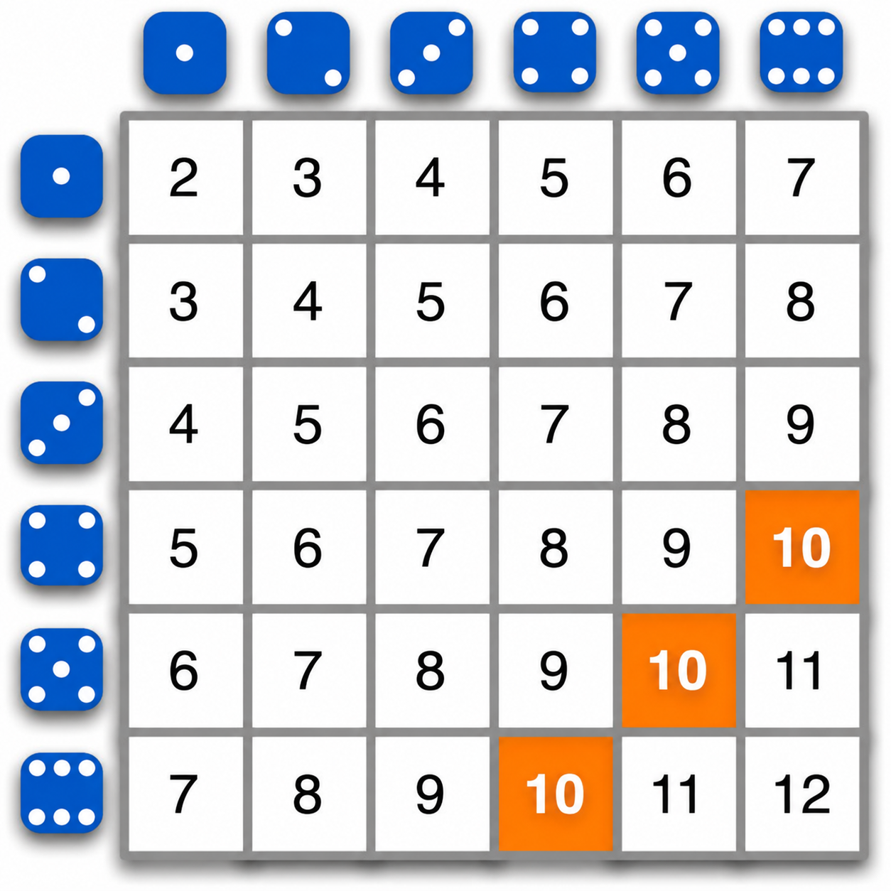
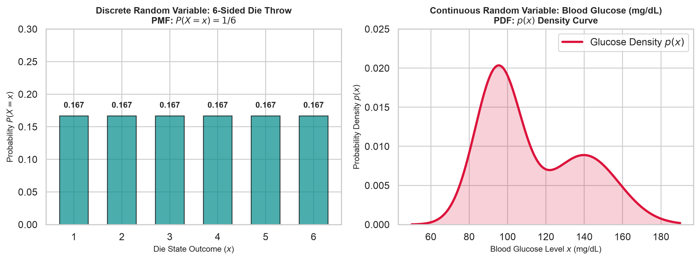
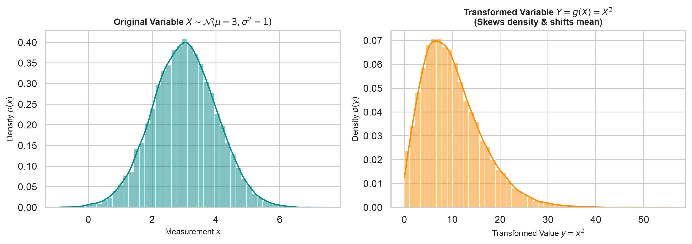
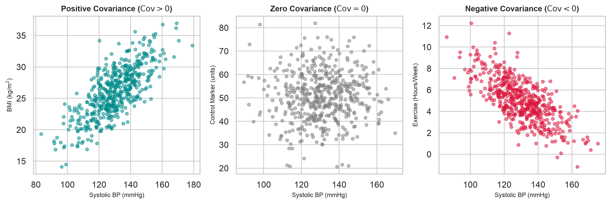
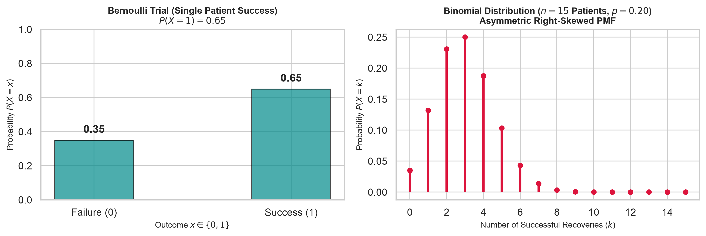
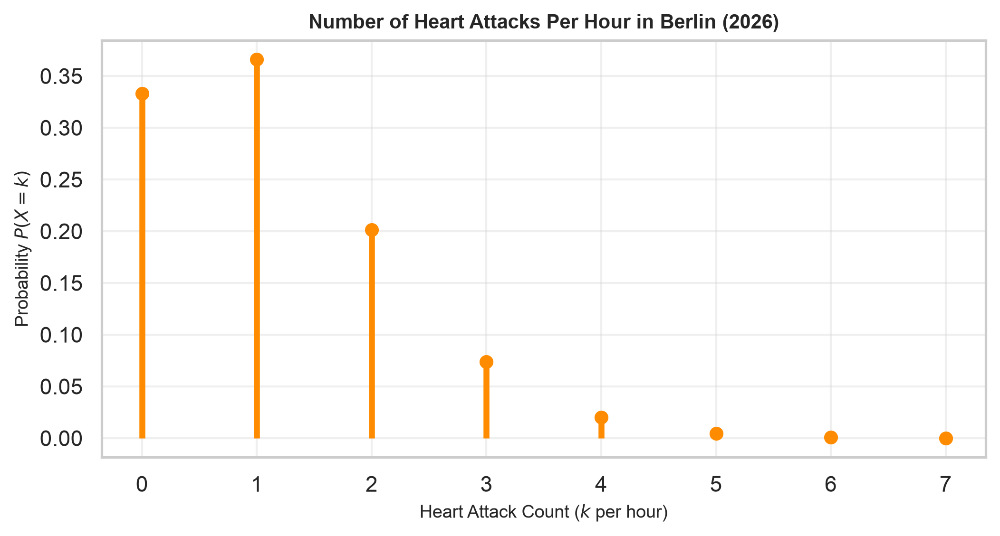
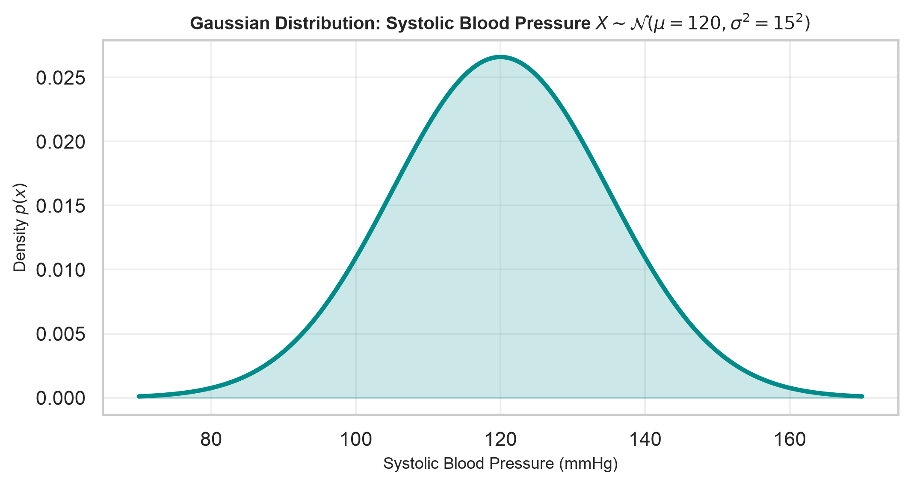
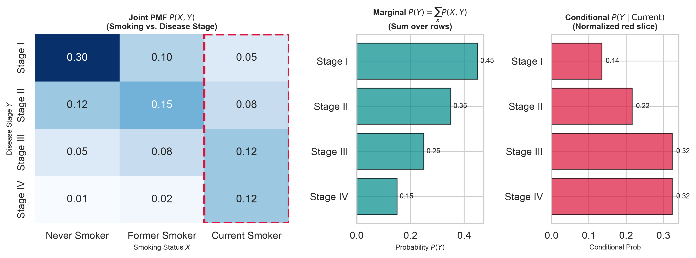
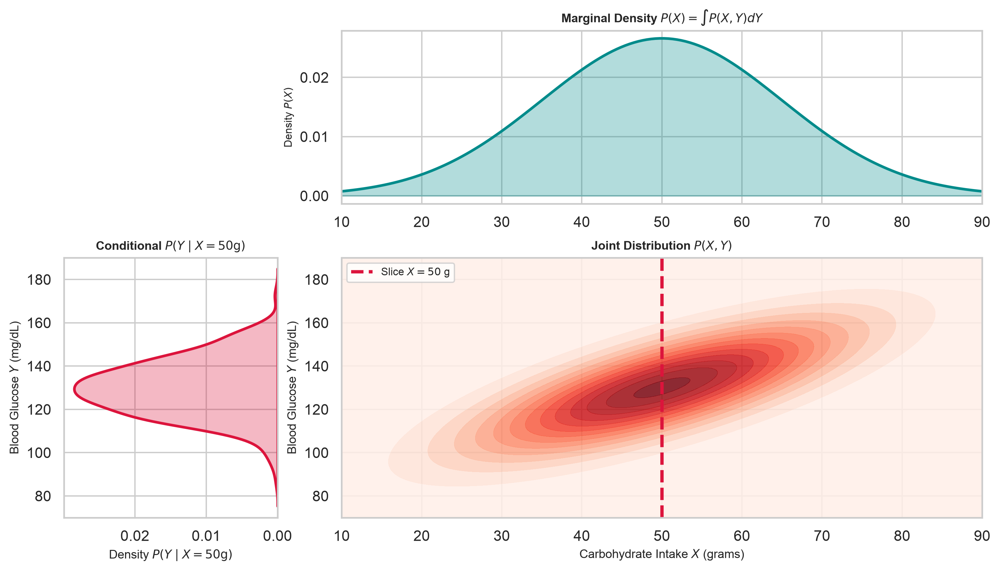

04 Random Variables & Probability Foundations
Mathematics for Machine Learning (Mathe3)
0. Pre-Class Preparation
Before coming to this lecture, please review:
1. Background & Historical Origins
1.1 From Gambling to Early Probability Theory

- 17th and 18th Century: Making decisions in an uncertain world.
- Probability of Events: \[\frac{\text{Favorable Outcomes}}{\text{Total Possible Outcomes}}\]
- Key People: Galileo, Pascal, Fermat, Laplace.
1.2 Carl Friedrich Gauss and Continuous Astronomical Measurement Errors
While early probability dealt with discrete outcomes in dice and cards, Carl Friedrich Gauss introduced continuous random variables to model physical measurement noise.
In his landmark 1809 astronomical treatise, Theoria motus corporum coelestium in sectionibus conicis solem ambientium (Theory of the Motion of the Heavenly Bodies Moving About the Sun in Conic Sections), Gauss sought to calculate the orbit of dwarf planet Ceres based on noisy telescopic observations.
Gauss realized that while planetary trajectories follow exact Newtonian mechanics, telescope observations are corrupted by continuous random errors \(\varepsilon\):
\[x_{\text{observed}} = x_{\text{true}} + \varepsilon, \quad \text{where } \varepsilon \sim \mathcal{N}(0, \sigma^2)\]
By assuming measurement errors follow a symmetric bell curve (the Gaussian / Normal distribution), Gauss derived the Method of Least Squares to find the most probable planetary orbit.
1.3 Medical Decision-Making Under Biological Variability
Why do we need random variables in human medicine and machine learning today?
Unlike planetary orbits—where physical laws are strictly deterministic and noise stems only from telescope instruments—biological and clinical settings feature inherent variability driven by complex interactions between genetics, physiology, behavior, and environment.
Medical Drug Comparison Quiz:
Consider evaluating two competing pain-relief medications for a clinical trial:
Drug A: Predictably reduces pain score by exactly \(3\) points for every single patient (\(P(\Delta = -3) = 1.0\)). \[\mathbb{E}[\Delta_A] = 3 \text{ points reduction}, \quad \text{Var}(\Delta_A) = 0\]
Drug B: Highly volatile. Reduces pain score by \(8\) points for \(50\%\) of patients, but increases pain score by \(2\) points (adverse reaction) for the remaining \(50\%\) of patients. \[\mathbb{E}[\Delta_B] = 0.5(8) + 0.5(-2) = 4 - 1 = 3 \text{ points reduction}\]
Both Drug A and Drug B have the exact same expected pain reduction (\(\mathbb{E}[\Delta] = 3\) points). However, Drug A provides a guaranteed, safe improvement, whereas Drug B carries a \(50\%\) risk of worsening the patient’s pain!
Relying solely on expected values is insufficient for decision-making. We require a formal language of random variables, variance, and probability distributions to quantify uncertainty, evaluate risk, and build safe machine learning models.
2. Random Variables and Expectations
2.1 What is a Random Variable?
A Random Variable \(X\) is a mathematical rule that assigns a numerical value to outcomes of an uncertain random process.
- Discrete Random Variable: Takes distinct, countable values \(x \in \{x_1, x_2, \dots\}\) (e.g. number of hospital readmissions or the outcome of rolling a die).
- Continuous Random Variable: Takes any value within a continuous range \(x \in \mathbb{R}\) (e.g. continuous patient blood glucose level in mg/dL or blood pressure in mmHg).
The side-by-side comparison below illustrates the fundamental visual and structural differences between a discrete probability distribution (histogram over finite states) and a continuous probability density function (smooth PDF curve):
Generate Discrete vs Continuous Side-by-Side Plots
fig, axes = plt.subplots(1, 2, figsize=(11, 4.2))
# --- Plot 1 (Left): Discrete Random Variable (6-sided Die Throw) ---
die_outcomes = np.arange(1, 7)
die_probs = np.ones(6) / 6.0
axes[0].bar(die_outcomes, die_probs, color='darkcyan', edgecolor='black', alpha=0.7, width=0.6)
axes[0].set_title('Discrete Random Variable: 6-Sided Die Throw\nPMF: $P(X = x) = 1/6$', fontsize=10, fontweight='bold')
axes[0].set_xlabel('Die State Outcome ($x$)', fontsize=9)
axes[0].set_ylabel('Probability $P(X = x)$', fontsize=9)
axes[0].set_xticks(die_outcomes)
axes[0].set_ylim(0, 0.3)
for x, p in zip(die_outcomes, die_probs):
axes[0].text(x, p + 0.01, f'{p:.3f}', ha='center', va='bottom', fontsize=9, fontweight='bold')
# --- Plot 2 (Right): Continuous Random Variable (Medical Blood Glucose Density) ---
x_glucose = np.linspace(50, 190, 500)
pdf_glucose = 0.6 * stats.norm.pdf(x_glucose, loc=95, scale=12) + 0.4 * stats.norm.pdf(x_glucose, loc=140, scale=18)
axes[1].plot(x_glucose, pdf_glucose, color='crimson', lw=2.5, label='Glucose Density $p(x)$')
axes[1].fill_between(x_glucose, pdf_glucose, color='crimson', alpha=0.2)
axes[1].set_title('Continuous Random Variable: Blood Glucose (mg/dL)\nPDF: $p(x)$ Density Curve', fontsize=10, fontweight='bold')
axes[1].set_xlabel('Blood Glucose Level $x$ (mg/dL)', fontsize=9)
axes[1].set_ylabel('Probability Density $p(x)$', fontsize=9)
axes[1].set_ylim(0, 0.025)
axes[1].legend(loc='upper right')
plt.tight_layout()
plt.show()
2.2 Discrete Expectations: Definition and Meaning
For a discrete random variable \(X\) with Probability Mass Function (PMF) \(P(X = x)\), the Expected Value \(\mathbb{E}[X]\) is defined by the central summation formula:
\[\mathbb{E}[X] = \sum_{x} x \cdot P(X = x)\]
\[\mathbb{E}[X] = 1\left(\frac{1}{6}\right) + 2\left(\frac{1}{6}\right) + 3\left(\frac{1}{6}\right) + 4\left(\frac{1}{6}\right) + 5\left(\frac{1}{6}\right) + 6\left(\frac{1}{6}\right) = \frac{21}{6} = 3.5\]
- Critical Perspective: You can roll a fair 6-sided die 10,000 times, but you will never roll a \(3.5\).
- Center of Gravity: \(\mathbb{E}[X]\) is the theoretical center of mass of the distribution. It does not represent an outcome that can actually be observed in any single trial!
- Demographic Analog: The average number of children per family (e.g. \(\mathbb{E}[X] = 1.4\) children). No individual family has 1.4 children—it is a theoretical long-run summary metric.
2.3 Continuous Expectations: Density and Calculus
For a continuous random variable \(X\) with Probability Density Function (PDF) \(p(x)\), the expected value extends from discrete summation to an integral over the full domain:
\[\mathbb{E}[X] = \int_{-\infty}^{\infty} x \cdot p(x) \, dx\]
For any continuous random variable \(X\):
- Probability of Any Single \(X = x_0\) is Zero: \(P(X = x_0) = 0\) (e.g., probability of having a blood glucose level of exactly \(95\text{ mg/dL}\) is zero).
- Interval Probabilities: We evaluate continuous probabilities over ranges \([a, b]\): \[P(a \le X \le b) = \int_{a}^{b} p(x) \, dx\]
3. Transformations, Variance and Covariance
3.1 Expectation of Transformed Variables
If a random variable \(X\) is transformed by a mathematical function \(g(X)\), its expected value is:
\[\mathbb{E}[g(X)] = \int_{-\infty}^{\infty} g(x) \cdot p(x) \, dx \quad \left(\text{or } \sum_{x} g(x) P(X = x)\right)\]
The plot below shows how applying a non-linear transformation \(g(X) = X^2\) stretches the underlying probability density function:
Generate Transformed Distribution Plots
fig, axes = plt.subplots(1, 2, figsize=(11, 4.0))
# 1. Original Distribution X ~ Normal(mu=3, sigma=1)
np.random.seed(42)
x_samples = np.random.normal(loc=3.0, scale=1.0, size=20000)
sns.histplot(x_samples, kde=True, ax=axes[0], color='darkcyan', stat='density', bins=50)
axes[0].set_title('Original Variable $X \sim \mathcal{N}(\mu=3, \sigma^2=1)$', fontsize=10, fontweight='bold')
axes[0].set_xlabel('Measurement $x$', fontsize=9)
axes[0].set_ylabel('Density $p(x)$', fontsize=9)
# 2. Transformed Variable Y = g(X) = X^2
y_samples = x_samples ** 2
sns.histplot(y_samples, kde=True, ax=axes[1], color='darkorange', stat='density', bins=50)
axes[1].set_title('Transformed Variable $Y = g(X) = X^2$\n(Skews density & shifts mean)', fontsize=10, fontweight='bold')
axes[1].set_xlabel('Transformed Value $y = x^2$', fontsize=9)
axes[1].set_ylabel('Density $p(y)$', fontsize=9)
plt.tight_layout()
plt.show()
3.2 Deriving Variance (\(\text{Var}(X)\))
Setting \(g(X) = (X - \mu)^2\) where \(\mu = \mathbb{E}[X]\), Variance measures expected squared spread around the mean:
\[\text{Var}(X) = \sigma^2 = \mathbb{E}\left[(X - \mu)^2\right]\]
Key Identity:
\[\mathbb{E}[X^2] = \text{Var}(X) + (\mathbb{E}[X])^2\]
3.3 Linear Transformations and \(Z\)-Score Standardization
For constants \(a, b \in \mathbb{R}\):
Linearity of Expectation: \[\mathbb{E}[a X + b] = a \mathbb{E}[X] + b\]
Variance Scaling Rule: \[\text{Var}(a X + b) = a^2 \text{Var}(X)\]
\(Z\)-Score Standardization Result: For \(Z = \frac{X - \mu}{\sigma}\): \[\mathbb{E}[Z] = 0, \quad \text{Var}(Z) = 1\]
3.4 Covariance and Correlation
Covariance measures the joint linear variability of two random variables \(X\) and \(Y\):
\[\text{Cov}(X, Y) = \mathbb{E}\left[(X - \mu_X)(Y - \mu_Y)\right] = \mathbb{E}[XY] - \mathbb{E}[X]\mathbb{E}[Y]\]
To see why normalization is required, consider real medical measurements: Systolic Blood Pressure (\(X\), in \(\text{mmHg}\)) vs. Body Mass Index (\(Y\), in \(\text{kg/m}^2\)). The resulting covariance carries compound units (\(\text{mmHg} \cdot \text{kg/m}^2\)):
Generate Real-Valued Medical Covariance Scatter Plots
np.random.seed(42)
n_pts = 500
# 1. Positive Covariance: Systolic BP (mmHg) vs. BMI (kg/m^2)
mu_pos = [130.0, 26.0]
cov_matrix_pos = [[15.0**2, 0.75 * 15.0 * 4.0], [0.75 * 15.0 * 4.0, 4.0**2]] # Cov = +45 mmHg*kg/m^2
pts_pos = np.random.multivariate_normal(mu_pos, cov_matrix_pos, n_pts)
# 2. Zero Covariance: Systolic BP (mmHg) vs. Random Lab Control Marker
mu_zero = [130.0, 50.0]
cov_matrix_zero = [[15.0**2, 0.0], [0.0, 10.0**2]] # Cov = 0
pts_zero = np.random.multivariate_normal(mu_zero, cov_matrix_zero, n_pts)
# 3. Negative Covariance: Systolic BP (mmHg) vs. Exercise Hours/Week
mu_neg = [130.0, 5.0]
cov_matrix_neg = [[15.0**2, -0.70 * 15.0 * 2.0], [-0.70 * 15.0 * 2.0, 2.0**2]] # Cov = -21 mmHg*hours
pts_neg = np.random.multivariate_normal(mu_neg, cov_matrix_neg, n_pts)
fig, axes = plt.subplots(1, 3, figsize=(11, 3.8))
# Panel 1: Positive Covariance
axes[0].scatter(pts_pos[:, 0], pts_pos[:, 1], color='darkcyan', alpha=0.5, s=15)
axes[0].set_title(r'Positive Covariance ($\text{Cov} > 0$)', fontsize=10, fontweight='bold')
axes[0].set_xlabel('Systolic BP (mmHg)', fontsize=8)
axes[0].set_ylabel('BMI (kg/m$^2$)', fontsize=8)
# Panel 2: Zero Covariance
axes[1].scatter(pts_zero[:, 0], pts_zero[:, 1], color='gray', alpha=0.5, s=15)
axes[1].set_title(r'Zero Covariance ($\text{Cov} = 0$)', fontsize=10, fontweight='bold')
axes[1].set_xlabel('Systolic BP (mmHg)', fontsize=8)
axes[1].set_ylabel('Control Marker (units)', fontsize=8)
# Panel 3: Negative Covariance
axes[2].scatter(pts_neg[:, 0], pts_neg[:, 1], color='crimson', alpha=0.5, s=15)
axes[2].set_title(r'Negative Covariance ($\text{Cov} < 0$)', fontsize=10, fontweight='bold')
axes[2].set_xlabel('Systolic BP (mmHg)', fontsize=8)
axes[2].set_ylabel('Exercise (Hours/Week)', fontsize=8)
plt.tight_layout()
plt.show()
Because covariance \(\text{Cov}(X, Y)\) carries scale-dependent compound units (e.g., \([\text{mmHg} \cdot \text{kg}/\text{m}^2]\)), we normalize it by dividing out standard deviations \(\sigma_X \sigma_Y\) to compute Pearson’s Correlation Coefficient \(r \in [-1, 1]\):
\[r = \text{Corr}(X, Y) = \frac{\text{Cov}(X,Y)}{\sigma_X \sigma_Y}\]
Dividing out \(\sigma_X \cdot \sigma_Y\) strips away all physical units, yielding a pure unitless metric \(r \in [-1, 1]\).
4. Key Distributions and Future ML Connections
4.1 Discrete Distributions: Bernoulli and Binomial
- Bernoulli Distribution: Models a single medical treatment trial \(X \in \{0, 1\}\) with success probability \(P(X=1) = p\): \[\mathbb{E}[X] = p, \quad \text{Var}(X) = p(1-p)\]
- Binomial Distribution: Models number of successful recoveries \(k\) out of \(n=15\) independent patient trials (\(p=0.20\), right-skewed): \[P(X = k) = \binom{n}{k} p^k (1-p)^{n-k}, \quad \mathbb{E}[X] = np, \quad \text{Var}(X) = np(1-p)\]
Generate Bernoulli and Binomial Plots
fig, axes = plt.subplots(1, 2, figsize=(11, 3.8))
# 1. Bernoulli (Left)
b_outcomes = [0, 1]
b_probs = [0.35, 0.65] # p = 0.65 treatment success
axes[0].bar(b_outcomes, b_probs, color='darkcyan', width=0.4, edgecolor='black', alpha=0.7)
axes[0].set_title('Bernoulli Trial (Single Patient Success)\n$P(X=1) = 0.65$', fontsize=10, fontweight='bold')
axes[0].set_xlabel('Outcome $x \in \{0, 1\}$', fontsize=9)
axes[0].set_ylabel('Probability $P(X=x)$', fontsize=9)
axes[0].set_xticks([0, 1])
axes[0].set_xticklabels(['Failure (0)', 'Success (1)'])
axes[0].set_ylim(0, 1.0)
for x, p in zip(b_outcomes, b_probs):
axes[0].text(x, p + 0.03, f'{p:.2f}', ha='center', va='bottom', fontweight='bold')
# 2. Binomial (Right, Asymmetric n=15, p=0.20)
n_trials = 15
p_success = 0.20
k_vals = np.arange(0, n_trials + 1)
binom_pmf = stats.binom.pmf(k_vals, n_trials, p_success)
axes[1].vlines(k_vals, 0, binom_pmf, colors='crimson', lw=2.5, label='PMF Impulse')
axes[1].plot(k_vals, binom_pmf, 'o', color='crimson', ms=5)
axes[1].set_title('Binomial Distribution ($n=15$ Patients, $p=0.20$)\nAsymmetric Right-Skewed PMF', fontsize=10, fontweight='bold')
axes[1].set_xlabel('Number of Successful Recoveries ($k$)', fontsize=9)
axes[1].set_ylabel('Probability $P(X=k)$', fontsize=9)
# Integer ticks only (no float values like 2.5 or 7.5)
axes[1].set_xticks(np.arange(0, n_trials + 1, 2))
plt.tight_layout()
plt.show()
4.2 Count Data: The Poisson Distribution
Models the discrete count of rare, independent occurrences \(k \in \{0, 1, 2, \dots\}\) in a fixed time or spatial interval, given a constant average rate parameter \(\lambda\):
\[P(X = k) = \frac{\lambda^k e^{-\lambda}}{k!}, \quad \mathbb{E}[X] = \lambda, \quad \text{Var}(X) = \lambda\]
Historical Origins:
As documented in the landmark Poisson Distribution Historical Origins, Poisson count data models arise naturally across diverse fields:
- Number of Wrongful Convictions (Poisson 1837): Siméon Denis Poisson originally derived the distribution to model rare miscarriages of justice in French court juries.
- Number of Stars in a Unit of Space (Newcomb 1860): Simon Newcomb modeled the spatial density of stars across regions of space.
- Number of Prussian Soldiers Killed by Horse Kicks (Bortkiewicz 1898): Ladislaus Bortkiewicz famously demonstrated that annual cavalry fatalities across 14 Prussian army corps followed a Poisson distribution.
Generate Poisson Distribution Plot
lambda_val = 1.1
k_poisson = np.arange(0, 8)
poisson_pmf = stats.poisson.pmf(k_poisson, lambda_val)
plt.figure(figsize=(8, 3.8))
plt.vlines(k_poisson, 0, poisson_pmf, colors='darkorange', lw=3, label='Discrete Impulse $P(X=k)$')
plt.plot(k_poisson, poisson_pmf, 'o', color='darkorange', ms=6)
plt.title('Number of Heart Attacks Per Hour in Berlin (2026)', fontsize=10, fontweight='bold')
plt.xlabel('Heart Attack Count ($k$ per hour)', fontsize=9)
plt.ylabel('Probability $P(X=k)$', fontsize=9)
plt.xticks(k_poisson)
plt.grid(True, alpha=0.3)
plt.show()
4.3 Continuous Distributions: The Gaussian (Normal)
Continuous probability density function:
\[p(x \mid \mu, \sigma^2) = \frac{1}{\sqrt{2\pi\sigma^2}} \exp\left( -\frac{(x - \mu)^2}{2\sigma^2} \right)\]
- Medical Example: Human systolic blood pressure \(X \sim \mathcal{N}(120, 15^2)\text{ mmHg}\).
Generate Gaussian Density Plot
mu_bp, sigma_bp = 120.0, 15.0
x_bp = np.linspace(70, 170, 500)
pdf_bp = stats.norm.pdf(x_bp, loc=mu_bp, scale=sigma_bp)
plt.figure(figsize=(8, 3.8))
plt.plot(x_bp, pdf_bp, color='darkcyan', lw=2.5, label='Systolic BP Density')
plt.fill_between(x_bp, pdf_bp, color='darkcyan', alpha=0.2)
plt.title('Gaussian Distribution: Systolic Blood Pressure $X \sim \mathcal{N}(\mu=120, \sigma^2=15^2)$', fontsize=10, fontweight='bold')
plt.xlabel('Systolic Blood Pressure (mmHg)', fontsize=9)
plt.ylabel('Density $p(x)$', fontsize=9)
plt.grid(True, alpha=0.3)
plt.show()
4.4 Brief Glimpse: The Central Limit Theorem (CLT)
Why does the Gaussian distribution appear everywhere in biological and physical systems?
Let \(X_1, X_2, \dots, X_N\) be independent and identically distributed (i.i.d.) random variables with mean \(\mu\) and finite variance \(\sigma^2\), regardless of their underlying distribution (e.g. uniform, exponential, or skewed). As sample size \(N \to \infty\), the sample mean \(\bar{X}_N = \frac{1}{N}\sum_{i=1}^N X_i\) approaches a Normal distribution:
\[\bar{X}_N \;\sim\; \mathcal{N}\left(\mu, \, \frac{\sigma^2}{N}\right)\]
Hands-on Exploration: In Tutorial 04, you will empirically verify the CLT by averaging heavily skewed non-Gaussian samples and observing how the sample mean converges to a symmetric Gaussian bell curve.
4.5 Error Model in Linear Regression
In Week 3 we introduced a deterministic linear line, we now formulate the full probabilistic additive error model:
\[y_i = \underbrace{w_0 + w_1 x_i}_{\text{Deterministic for given } x_i} + \underbrace{\varepsilon_i}_{\text{Random Variable}}\]
where the errors \(\varepsilon_i\) are independent and identically distributed (i.i.d.) according to a Normal distribution:
\[\varepsilon_i \overset{\text{i.i.d.}}{\sim} \mathcal{N}(0, \sigma^2)\]
- Independent: Noise \(\varepsilon_i\) gives zero information about \(\varepsilon_j\) (\(\text{Cov}(\varepsilon_i, \varepsilon_j) = 0\)).
- Identically Distributed: Every error has mean zero (\(\mathbb{E}[\varepsilon_i] = 0\)) and equal variance (\(\text{Var}(\varepsilon_i) = \sigma^2\), homoscedasticity).
5. Joint, Marginal, and Conditional Distributions
5.1 Discrete 2D Joint Distribution (Smoking vs. Disease Stage)
To understand joint \(P(X, Y)\), marginal \(P(X)\) and \(P(Y)\), and conditional \(P(Y \mid X)\) distributions without integration, consider a medical cohort evaluating Smoking Status (\(X \in \{\text{Never}, \text{Former}, \text{Current}\}\), 3 levels) vs. Respiratory Disease Stage (\(Y \in \{\text{Stage I}, \text{Stage II}, \text{Stage III}, \text{Stage IV}\}\), 4 levels):
Generate Discrete 2D Joint, Marginal, and Conditional Figures
x_labels = ['Never Smoker', 'Former Smoker', 'Current Smoker']
y_labels = ['Stage I', 'Stage II', 'Stage III', 'Stage IV']
# Joint Probability Matrix P(X, Y) summing to 1.0
P_XY = np.array([
[0.30, 0.10, 0.05], # Stage I
[0.12, 0.15, 0.08], # Stage II
[0.05, 0.08, 0.12], # Stage III
[0.01, 0.02, 0.12] # Stage IV
])
marg_X = np.sum(P_XY, axis=0) # Sum over Y (columns) -> [0.48, 0.35, 0.37]
marg_Y = np.sum(P_XY, axis=1) # Sum over X (rows) -> [0.45, 0.35, 0.25, 0.15]
cond_Y_given_current = P_XY[:, 2] / np.sum(P_XY[:, 2]) # P(Y | Current Smoker)
fig, axes = plt.subplots(1, 3, figsize=(11, 4.2), gridspec_kw={'width_ratios': [2, 1, 1]})
# 1. Joint Heatmap P(X, Y)
sns.heatmap(P_XY, annot=True, fmt='.2f', cmap='Blues', ax=axes[0], cbar=False,
xticklabels=x_labels, yticklabels=y_labels)
axes[0].set_title('Joint PMF $P(X, Y)$\n(Smoking vs. Disease Stage)', fontsize=9, fontweight='bold')
axes[0].set_xlabel('Smoking Status $X$', fontsize=8)
axes[0].set_ylabel('Disease Stage $Y$', fontsize=8)
# Highlight Current Smoker column (index 2)
rect = plt.Rectangle((2, 0), 1, 4, fill=False, edgecolor='crimson', lw=2.5, linestyle='--')
axes[0].add_patch(rect)
# 2. Marginal P(Y)
axes[1].barh(y_labels, marg_Y, color='darkcyan', alpha=0.7, edgecolor='black')
axes[1].set_title('Marginal $P(Y) = \\sum_x P(X,Y)$\n(Sum over rows)', fontsize=9, fontweight='bold')
axes[1].set_xlabel('Probability $P(Y)$', fontsize=8)
axes[1].invert_yaxis()
for i, val in enumerate(marg_Y):
axes[1].text(val + 0.01, i, f'{val:.2f}', va='center', fontsize=8)
# 3. Conditional P(Y | Current Smoker)
axes[2].barh(y_labels, cond_Y_given_current, color='crimson', alpha=0.7, edgecolor='black')
axes[2].set_title('Conditional $P(Y \\mid \\text{Current})$\n(Normalized red slice)', fontsize=9, fontweight='bold')
axes[2].set_xlabel('Conditional Prob', fontsize=8)
axes[2].invert_yaxis()
for i, val in enumerate(cond_Y_given_current):
axes[2].text(val + 0.01, i, f'{val:.2f}', va='center', fontsize=8)
plt.tight_layout()
plt.show()
5.2 Continuous 2D Joint Distribution (Carbohydrate Intake vs. Glucose)
For continuous random variables, discrete summations become 2D density surfaces. In the 3-panel layout below:
- Center Panel: Joint Density Contour \(P(X, Y)\) with a vertical red dashed line at slice \(X = 50\text{g}\) Carbohydrate Intake.
- Left Panel: Rotated Conditional Density \(P(Y \mid X = 50\text{g})\) aligned with the vertical slice line at \(X = 50\text{g}\).
- Top Panel: Marginal Density \(P(X) = \int P(X, Y) dY\) summed across all glucose levels.
Generate Continuous 3-Panel Joint, Conditional, and Marginal Plot
np.random.seed(42)
# Generate 2D Gaussian dataset (Carbohydrate Intake X vs Glucose Level Y)
mean_vec = [50.0, 130.0] # 50g carbs, 130 mg/dL glucose
cov_mat = [[15.0**2, 0.75 * 15.0 * 20.0], [0.75 * 15.0 * 20.0, 20.0**2]] # rho = 0.75 correlation
pts = np.random.multivariate_normal(mean_vec, cov_mat, 10000)
x_carbs, y_glucose = pts[:, 0], pts[:, 1]
# Grid setup for joint 2D density
x_grid = np.linspace(10, 90, 150)
y_grid = np.linspace(70, 190, 150)
XX, YY = np.meshgrid(x_grid, y_grid)
pos = np.dstack((XX, YY))
rv = stats.multivariate_normal(mean_vec, cov_mat)
ZZ = rv.pdf(pos)
# Slice setup at X = x0 = 50g
x0 = 50.0
slice_mask = (x_carbs >= x0 - 1.0) & (x_carbs <= x0 + 1.0)
y_sliced = y_glucose[slice_mask]
# Create 3-panel layout: Joint (center), Conditional Y|X=50 (left), Marginal X (top)
fig = plt.figure(figsize=(11, 6.2))
gs = fig.add_gridspec(2, 2, width_ratios=[1, 3], height_ratios=[2, 3],
left=0.08, right=0.95, bottom=0.1, top=0.92,
wspace=0.15, hspace=0.25)
# --- 1. Center Panel: Joint Distribution P(X, Y) Contour Heatmap ---
ax_joint = fig.add_subplot(gs[1, 1])
cf = ax_joint.contourf(XX, YY, ZZ, levels=15, cmap='Reds', alpha=0.85)
ax_joint.axvline(x0, color='crimson', lw=2.5, linestyle='--', label=f'Slice $X = {int(x0)}$ g')
ax_joint.set_xlabel('Carbohydrate Intake $X$ (grams)', fontsize=9)
ax_joint.set_ylabel('Blood Glucose $Y$ (mg/dL)', fontsize=9)
ax_joint.set_title('Joint Distribution $P(X, Y)$', fontsize=9, fontweight='bold')
ax_joint.legend(loc='upper left', fontsize=8)
# --- 2. Left Panel: Conditional Distribution P(Y | X = 50g) (Rotated Slice) ---
ax_cond_y = fig.add_subplot(gs[1, 0], sharey=ax_joint)
sns.kdeplot(y=y_sliced, ax=ax_cond_y, color='crimson', lw=2, fill=True, alpha=0.3)
ax_cond_y.set_xlabel('Density $P(Y \\mid X=50\\text{g})$', fontsize=9)
ax_cond_y.set_ylabel('Blood Glucose $Y$ (mg/dL)', fontsize=9)
ax_cond_y.set_title('Conditional $P(Y \\mid X=50\\text{g})$', fontsize=9, fontweight='bold')
ax_cond_y.invert_xaxis()
# --- 3. Top Panel: Marginal Distribution P(X) ---
ax_marg_x = fig.add_subplot(gs[0, 1], sharex=ax_joint)
x_density = stats.norm.pdf(x_grid, loc=50.0, scale=15.0)
ax_marg_x.plot(x_grid, x_density, color='darkcyan', lw=2)
ax_marg_x.fill_between(x_grid, 0, x_density, color='darkcyan', alpha=0.3)
ax_marg_x.set_title('Marginal Density $P(X) = \\int P(X,Y)dY$', fontsize=9, fontweight='bold')
ax_marg_x.set_ylabel('Density $P(X)$', fontsize=8)
plt.show()
The joint probability density of two continuous random variables \(X\) and \(Y\) decomposes into the product of the conditional density and the marginal density:
\[P(X, Y) = P(Y \mid X) \cdot P(X) = P(X \mid Y) \cdot P(Y)\]